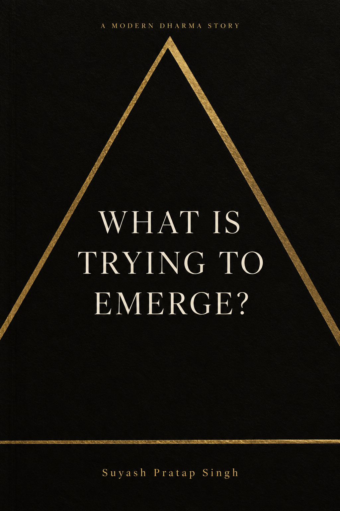

ACT I
THE CLUES
The patterns appear before they can be named.
The questions are ancient.
The investigation is contemporary.
A MODERN DHARMA STORY
A story about noticing what keeps showing up.
Following your nature may not make life predictable.
But resisting your nature does not make life secure.
01 / ABOUT
A role.
A rejection.
A friendship.
A child.
A question that refuses to leave.
What Is Trying To Emerge? follows Arjun through careers, relationships, gyms, airports, mountains, and ordinary conversations.
What begins as a search for answers gradually becomes an investigation into something else entirely.
Not: What should I do?But: What keeps showing up?
Modern Dharma is an exploration of the evidence life leaves behind, and what those clues might reveal about what is trying to emerge.
02 / THE BOOK
What Is Trying To Emerge? is a reflective novel about purpose, responsibility, capacity, love, and the recurring patterns that quietly shape a life.
Across four acts, Arjun gradually discovers that meaning is rarely found through certainty.
More often, it emerges through attention.
FIRST EDITION 20 DECEMBER 2026

THE JOURNEY
Evidence becomes pattern.
Pattern becomes recognition.
ACT I
The patterns appear before they can be named.
ACT II
The clues are examined.
ACT III
A recurring thread becomes difficult to ignore.
ACT IV
The evidence is finally trusted.
03 / SAMPLE
Every investigation begins somewhere.
Read the opening chapter of What Is Trying To Emerge? and follow the first clues.
Meet Arjun on his fortieth birthday as a simple decision gradually becomes the first piece of evidence in a much larger investigation.
READ THE FIRST CHAPTER04 / READER REFLECTION
Thank you for reading What Is Trying To Emerge?
This survey is not a test of whether you understood or agreed with the book. I am interested in your experience as a reader: what stayed with you, where your attention drifted, and which ideas continued following you after you finished.
The reflection takes approximately 10 minutes. Answer honestly.
BEGIN REFLECTION05 / AUTHOR & CO-INVESTIGATOR

06 / FROM OTHER NOTEBOOKS
Every life leaves clues.
A recurring question. A pattern that refuses to leave. A conversation that changed something. A field observation that stayed longer than expected.
Not: What do you think? But: What have you noticed?
CONTRIBUTE TO THE INVESTIGATION
No theory is required. No perfect explanation. Just something that happened, what it made visible, and the question it left behind.
Describe the moment in a few lines.
Name the pattern, shift, or contradiction.
Leave the investigation open.
Anonymous submissions are available through the observation portal.
HOW THE EVIDENCE TRAVELS
Selected observations may later appear, only with permission, in the Reading Room, on Instagram, or as part of the wider collective investigation.